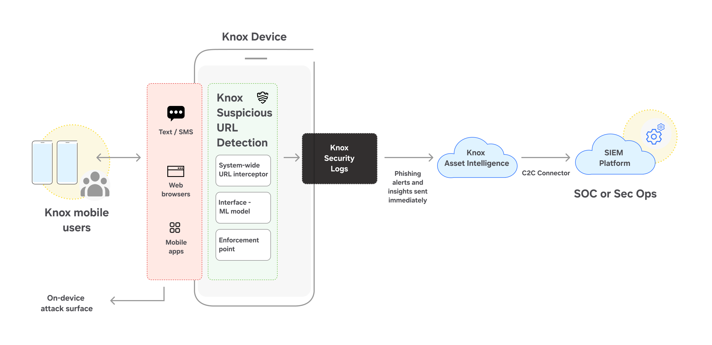

Knox Zero Trust Framework
Last updated March 7th, 2025
This feature is only available on managed devices, and requires the use of an EMM or UEM.
The Knox Zero Trust Framework enhances security in enterprise environments by leveraging Android 14 to provide advanced security capabilities described here.
Knox Security Log
The Knox Security Log is an industry-first OEM security telemetry solution; it enables security workflows to facilitate real-time security alerts, and perform threat hunting activities. It’s our core continuous monitoring mechanism, consolidating all security telemetry data of Samsung devices in a centralized system.
The Knox Security Log operates as an on-device database, accessible only through the Knox Framework. This database resides in an isolated Linux domain outside the main operating system, ensuring that unauthorized sources resting at the application layer (due to Security-Enhanced Android) can’t access it. During operation, the Knox Framework collects various security signals and telemetry data from the system and stores them in the security log.
A privacy filter is applied upon data insertion to determine the origin of the data (such as personal profiles) and whether it contains identifiable information. This mechanism ensures that any sensitive data is redacted and excluded from being stored. As a result, the security log retains non-sensitive telemetry signals while preserving a trace of user actions for security auditing.
This feature is available only for fully managed company-owned devices enrolled in the Knox Asset Intelligence and is supported on devices running Android 15 or higher.
The primary goal of the security log is to integrate mobile security telemetry into modern security operations workflows, and it has the following features:
Prioritized event alerts
When a new event is logged, it is evaluated against a severity threshold. If it meets the pre-configured push threshold, it is automatically forwarded to the Security Operations Center (SOC). Severity levels classify threats based on their potential impact:
- HIGH severity indicates a strong attack signal, events are pushed to the SOC in real time.
- MEDIUM severity indicates a potential attack signal, but events may not be pushed to the SOC immediately.
- LOW severity indicates a weaker threat, events are aggregated and pushed hourly in batches. The events that are not yet pushed can still be accessed through a SQL query or SQL query enrichment to the log.
For example, a phishing alert generated through Knox Suspicious URL Detection is classified as medium severity, as it could directly indicate an attack. Comparatively, a camera permission signal is classified as low severity, as it is generally benign but could indicate malicious activity when analyzed in context with other events.
The severity classification is defined by Knox, and it is not based on any existing standard framework (such as MITRE ATT&CK).
To learn more about SOC integration options, please consult with your Samsung account representative.
Security event enrichment
Security event enrichment enables query-based requests, and SOCs can leverage the security logs to provide insights beyond basic event detection. By using cloud connector in Knox Asset Intelligence, IT admins can submit SQL queries, and retrieve security log data, without requiring any additional third-party setup.
For example,
- A phishing event is detected and pushed to the SOC, indicating that an end user accessed a phishing website.
- The SOC can then enrich this signal by sending an enrichment query to the device via the impacted app for Security information and event management (SIEM). This enrichment could request:
- Recent events that occurred within a specific timeframe after the phishing event.
- Process-level information to debug whether malware is injected into the device.
Since enterprise environments use different security playbooks or SIEM providers, the individual query and workflow may vary.
Smart eviction
Due to the intermittent connectivity and limited resources available on mobile devices, the Knox Security Log employs a unique mechanism to manage on-device storage of security signals.
Each logged security signal is assigned a severity level, which indicates the potential impact of a security event. Additionally, whenever a signal is sent to the Knox Asset Intelligence server, the server’s acknowledgement of its receipt is recorded in the Knox Security Log. If a signal remains unacknowledged, it continues to be periodically resent until acknowledgement is received.
To prevent log overflow, the system implements an eviction logic when the log reaches maximum capacity (log pressure). When this occurs, two actions are triggered:
- A signal is generated to indicate that the log is nearing its maximum storage limit.
- The system begins evicting entries based on the following conditions:
- Signals that have been successfully sent to SOC and acknowledged by the server are removed first when additional log space is required.
- If additional space is required, the system removes the oldest and least-severe entries.
- If the log is left with only high-severity events, then no additional events are accepted into the log, with the goal of preserving the original adversary’s actions.
By utilizing this eviction logic, it’s ensured that the most severe security events are retained while handling log flooding concerns.
Privacy filter
Given the nature & use cases of mobile devices, privacy is a core design principle of the Knox Security Log. Strict guidelines are enforced for storing security-related events in the database. The security log uses an ingress privacy filter, that redacts all the information stored in tag tables (described in Zero Trust signals and events section below). This limits the storage of user identifiable data, while balancing visibility into security incidents.
A great example for this is SMS-based phishing. On Android devices, there is only one native messaging app per device, regardless of the deployment mode - work or personal profile. Specifically, on a device with both work and personal profiles, there is a single messaging app which is located on the personal profile of the device. When SMS-based phishing attempt occurs within this messaging app, it’s impossible for IT admins to monitor it, due to privacy constraints.
With Knox Security Log, these phishing events can be logged locally on the device without exposing personal messages. The event stored in the log would captures the time of the event, but any information on the accessed URL and the origin application that triggered the phishing attempt is redacted.
Due to OEM-level visibility and control, these privacy filters are enforced on all the signals collected from managed devices. This ensures that enterprise receive relevant security insights without compromising user privacy.
Zero Trust signals and events
To enhance security visibility and strengthen the security posture of Samsung Knox devices, we have developed over 100+ signals that can be stored in the Knox Security Log for SOC ecosystems. These signals provide deeper insights into potential security threats and their detection. The Knox Security log offers access to these signals, which are not exposed via any API.
These signals range from outputs of processed detection engines to granular security information, such as process creation or termination events. By leveraging a diverse set of signals, enterprises can maintain a balance between detecting clear indicators of compromise and collecting fine-grained security telemetry for threat-hunting.
Signal content
Each signal consists of both common and specific data attributes:
-
Common data is stored in a main database table and serves as the foundation for all signal information. It includes data such as timestamp, signal name, privacy indicators, MITRE ATT&CK techniques, and severity levels.
-
Specific signal data, also known as tag table data, is stored in a separate database table and contains detailed information specific to each signal.
Knox Suspicious URL Detection
This feature is only available on managed devices, and requires the use of an EMM or UEM.
Phishing continues to be a persistent threat since the rise of the internet, and has been more prevalent on mobile devices. Cybercriminals often employ deceptive techniques to trick users into clicking malicious links, thereby compromising their devices, and exposing sensitive data. The evolving nature of phishing makes detection challenging, particularly given the diverse range of mobile apps, browsers, and processes.
To mitigate this threat, Knox Suspicious URL Detection provides on-device detection of malicious or potentially harmful links, by generating security signals based on user or system scenarios. These phishing events can be configured to send alerts to the SOC, enabling IT admins to gain instant visibility into phishing attempts. This lets enterprises to investigate attacks based on URL, source app, and associated metadata, enabling appropriate response actions. The Security Operations Center (SOC) can also proactively detect concerted or unauthorized attacks on corporate devices.
The following are the capabilities of Knox Suspicious URL Detection:
- Supports detection of multiple phishing techniques, including SMS-based phishing (smishing) and QR code phishing (quishing).
- Leverages Android platform-level capabilities to capture links based on user interactions.
- Utilizes on-device machine learning (ML) models to infer whether a link is potentially malicious.
- Unlike traditional mobile phishing solutions, Knox Suspicious URL Detection operates entirely on-device, and eliminates reliance on cloud-based intelligence services for inference.
Knox Suspicious URL Detection identifies and mitigates the most common types of malicious URLs encountered by users, including:
-
Normal malicious URLs: Websites with legitimate domain names but hosting harmful content.
-
Typo squatting URLs: Designed to mimic popular websites by using typos or misspellings to deceive users.
-
Short or tiny URLs: Shortened links that redirect to potentially malicious webpages.
-
Hypertext URLs: Similar to short URLs, but instead of displaying the actual URL, they embed masquerading text that links to a malicious website.

Features
Knox Suspicious URL Detection can be enabled and configured for devices using Knox Asset Intelligence as a part of Knox Security Logs. It does not require any agent or app to be installed on the device, eliminating user friction. It offers various enterprise-grade enhancements, including:
-
System-wide coverage: Knox Suspicious URL Detection solution operates at the framework level. It can monitor phishing events across both work and personal profiles, and doesn’t require any separate configuration or setup.
-
Privacy preserving: For malicious links accessed in a personal profile, only a phishing alert is generated and sensitive metadata, such as URL and app or package name, are filtered out before being stored in the Knox Security Logs.
-
On-device ML models: URL analysis is critical to determine whether a link is potentially malicious or harmful. Knox ML models operate on-device to analyze URL strings and pre-computed features before classifying links as potentially malicious. These ML models are regularly updated to keep pace with rapidly evolving threat landscape.
-
Predefined lists: Before URLs are analyzed by ML models, they are checked against predefined allowlists and blocklists. These lists contain:
- Trusted links (frequently visited webpages or enterprise-approved sites).
- Malicious links identified from threat intelligence feeds and repositories.
-
On-device sandbox: When dealing with shortened URLs, the on-device sandbox provides an isolated environment to retrieve the full URL. This is critical to determine whether the shortened URLs are being used for phishing.
Knox Suspicious URL Detection provides security insights at the source of an attack, enabling enterprises to detect threats early in the attack chain. IT admins can customize and fine-tune the detection using metadata signals, such as confidence score. This helps meet SOC requirements, such as signal-to-noise ratio.
On this page
Is this page helpful?